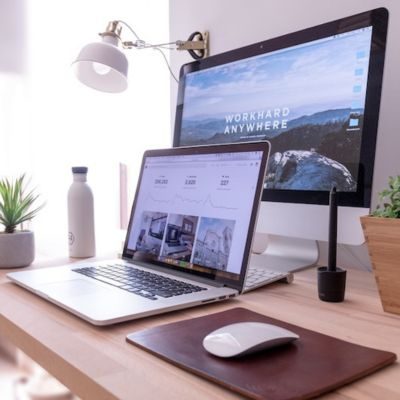
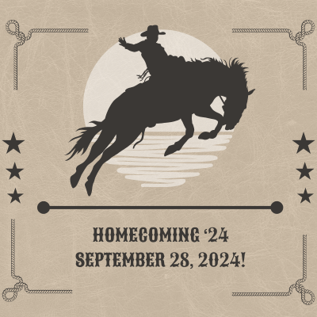
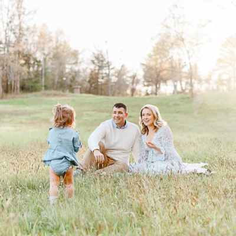
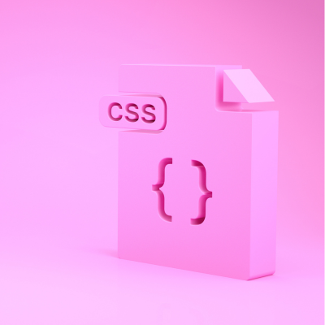
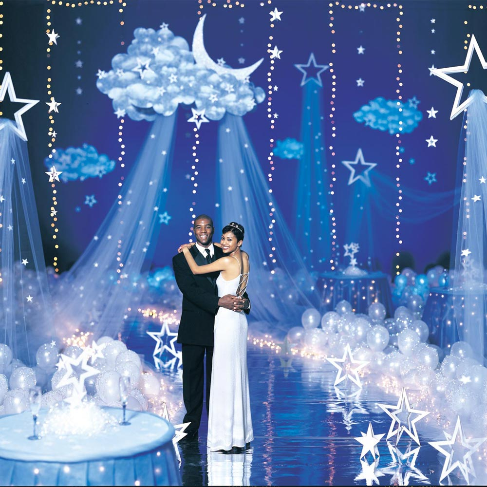
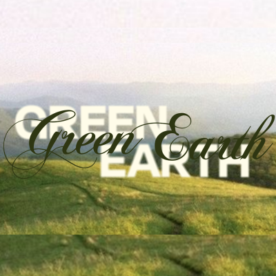

(Click to open websites)
This was the first websites that I made this year. Most of this website was built with the teacher but for the last third of the website, we built on our own (copying another one for reference).

This is the Homecoming website that I made for Lee's Summit West's 2024 hoco. I went with a brown color scheme to accompany the theme of "crossdown showdown" (western).

"Living in LS" was a website that we made in class together with the teacher. We made this on WordPress instead of JuiceMind, which was a different application and didn't use as much coding.

This website was a instruction type of project, where I learned how to use hover.css aspects, Animate on Scroll, and animate.css. I liked this project because it helped me learn and understand how to animate things so they appear more creatively.

"Court Couture" (unfinished, oops!) was a website project that I created on my own. I made sure it had a pastel colored theme to show the light and athletic vibe I was aiming for. I liked creating a 'new brand' and a website for it as I could express my creativity.
(Also unfinished...) This website was created for LSW's 2025 Prom. The theme was very contradicting so it was hard for me to create something that I liked. I tried my best to make the "Starlight Paradise" aspect come to life.

'Green Earth' is another brand/website that I came up with. This website has many greens and beige colors to show how light and eco-friendly the company is. I liked experimenting with the "background image" element. It was hard to figure out at first but eventually I understood.
